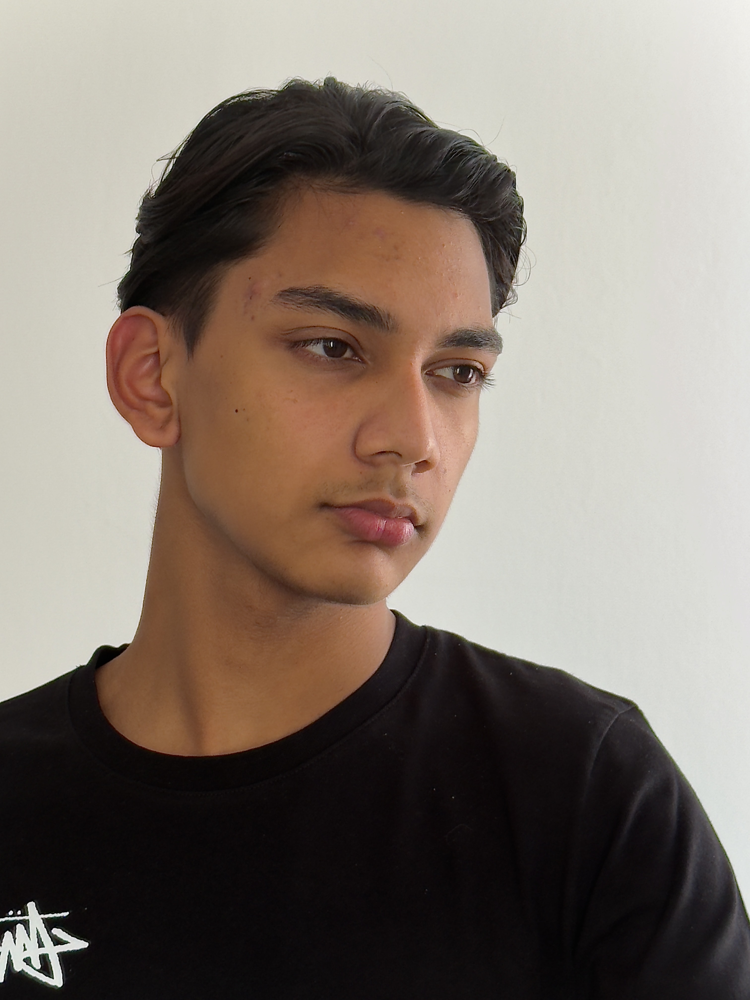

Dewish Birtantie
Functietitel: Junior Web Developer
Ik ben een rustige jongen die het best werkt als ik alleen bezig ben. Ik ben drummer en leer momenteel programmeren op school. Sinds ik klein was, heb ik altijd interesse gehad in computers en elektronica — ik wilde weten hoe ze werken en hoe ik ze beter kon maken. Nu leer ik steeds meer over webdevelopment.
Geboortedatum: 01-12-2009
Over Mij / About
Ik werk het liefst zelfstandig, maar kan ook goed samenwerken in groepen. Ik ben creatief en goed in probleemoplossend denken. Deze eigenschappen helpen mij bij het leren programmeren en het maken van webprojecten.
Portfolio / Projecten
Projecten: Ouderavond
Dit project maak ik samen met Damian voor de ouderavond. We werken er veel aan tijdens de lessen. Het project bestaat uit een website en een korte presentatie waarin we uitleggen wat we geleerd hebben.
Technische Vaardigheden / Skills
Programmeertalen
- HTML
- CSS
Frameworks en Libraries
- Nog geen
Tools en Workflow
- Git
Contact
- Email: Dewish213@gmail.com
- LinkedIn: linkedin.com/in/dewish-birtantie
- GitHub: github.com/kiphaar